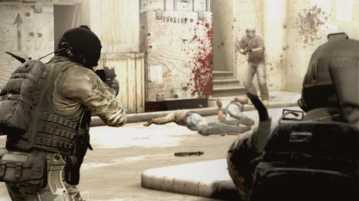
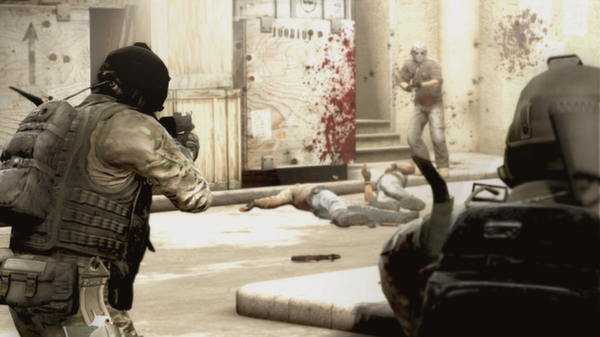

Counter-Strike: Global Offensive (CS: GO) розширює ігровий процес, заснований на команді, коли він був заснований 19 років тому.
CS: GO пропонує нові карти, символи, зброю та режими гри, а також надає оновлені версії класичного вмісту CS (de_dust2 і т.д.).
"Counter-Strike сприйняв ігрову індустрію зненацька, коли малоймовірний MOD став найпопулярнішою онлайн-грою в світі практично відразу після виходу в серпні 1999 року", - сказав Дуг Ломбарді у Valve. "Протягом останніх 12 років вона продовжувала бути однією з найпопулярніших ігор у світі, завоювавши конкурентні ігрові турніри і продавши понад 25 мільйонів одиниць по всьому світу. CS: GO обіцяє розширювати нагороди CS" геймплей і доставити його геймерам на ПК, а також консолі наступного покоління і Mac. "